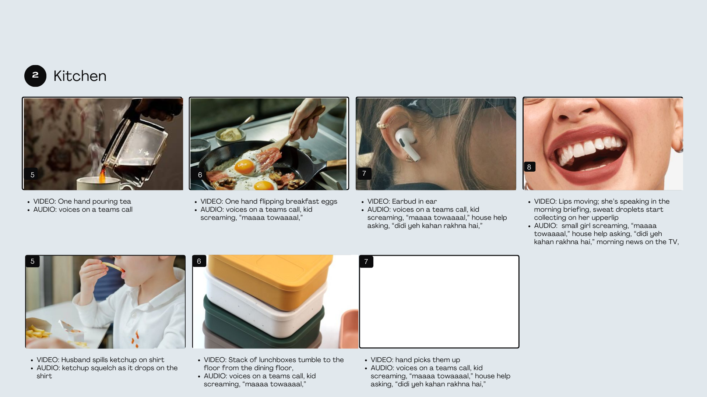
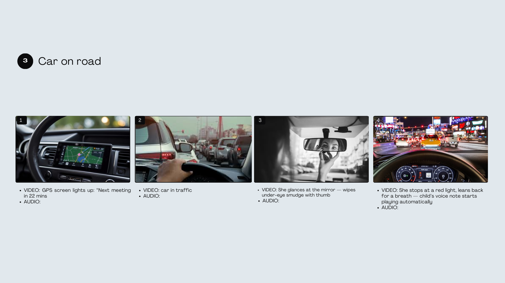
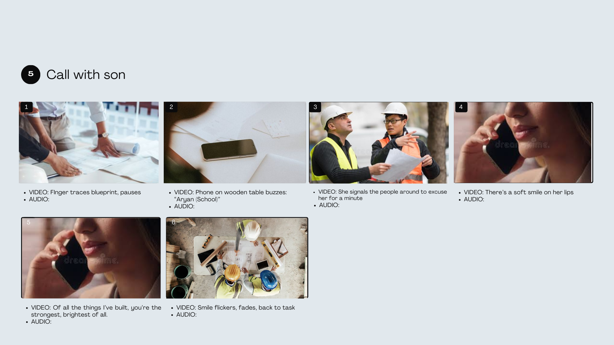
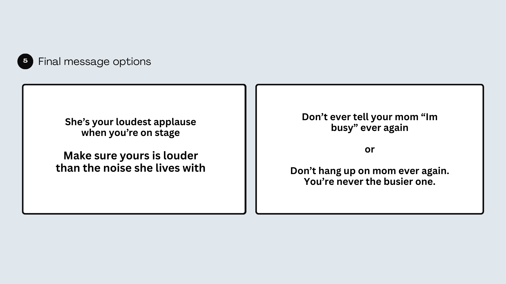
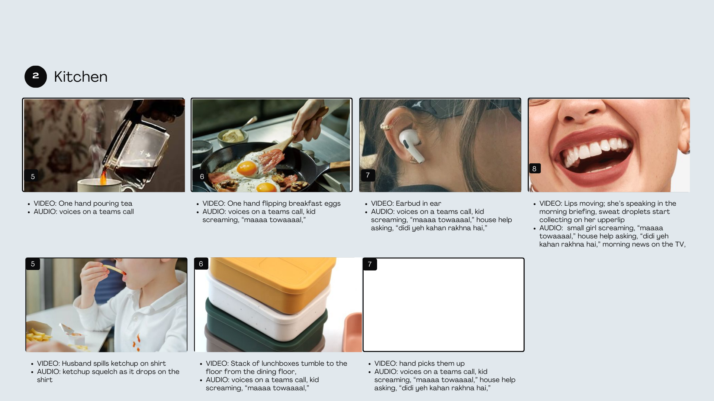
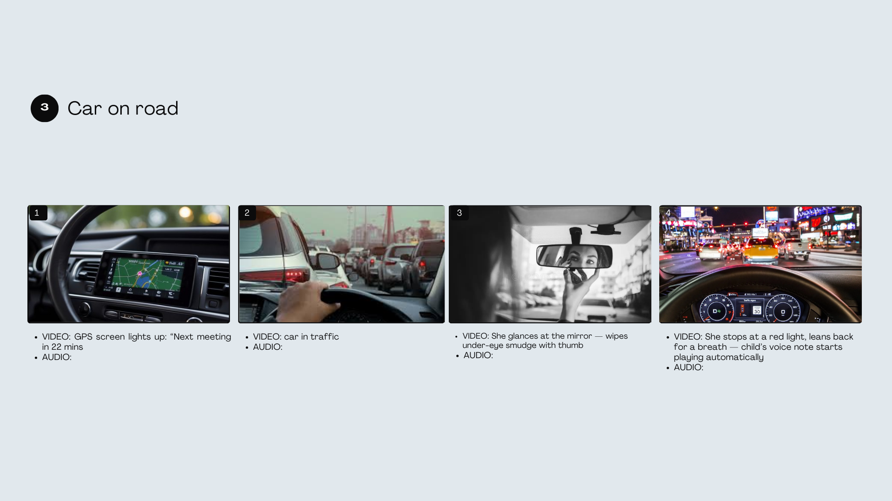
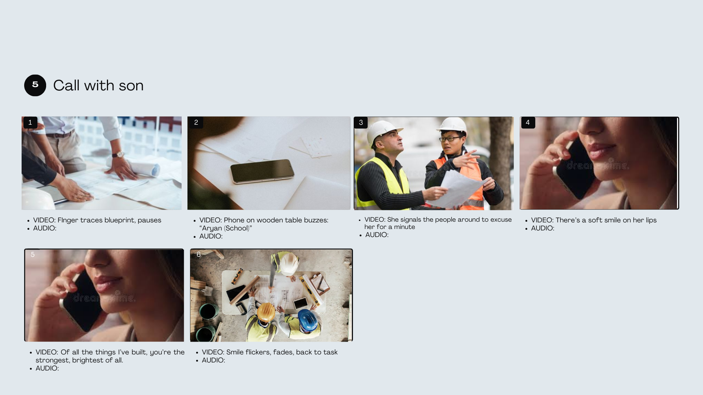
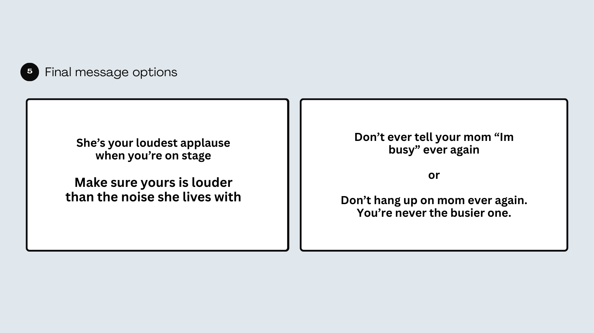

Built the entire insight (“superpowers become invisible weights”)
Crafted the narrative arc of the campaign
Designed symbolic objects metaphor system
Developed visual direction + communication flow
Wrote the strategic rationale + story logic
Hilti India wanted a Mother’s Day campaign that went beyond clichés of “supermoms” and sentimental gratitude. The goal was to acknowledge the reality of working mothers instead of glorifying their ability to juggle exhaustion, responsibility, and emotional labour. Most brand campaigns celebrated mothers as limitless, tireless beings. But the truth is that working mothers live days shaped by constant sensory overload- alarms, deadlines, pings, calls, commutes, expectations, all layered on top of the roles they fulfil at home. Hilti wanted a campaign that recognised this reality with honesty, not hero-worship.


We built the narrative around a first-person sensory experience. A day in a working mother’s life unfolds through hyper-real, overwhelming fragments: buzzing alarms, ringing phones, notifications, traffic, jobsite noise, unanswered messages, domestic expectations. The film uses tight close-ups, shaky pacing, sound layering, and contrast cuts to mirror her overstimulated reality. The breakthrough moment comes when she pauses mid-day to take a brief call from her child — an island of calm amid chaos. She returns to work with the same quiet strength she began with, not because she’s expected to be superhuman, but because she has no option not to show up. The campaign doesn’t ask the audience to applaud her “superpowers.” It simply makes them see her.
 







The concept reframed Mother’s Day for Hilti as an act of recognition, not glorification. It opened internal conversations around empathy, workload, and the hidden pressures carried by women in demanding roles. Externally, it stood out because it refused to romanticize burnout or depict mothers as mythical figures. Instead, it presented a grounded truth: Working mothers navigate noise the world never hears — and the least we can do is pay attention.